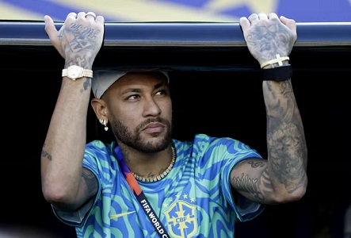

Neymar enfrenta o Haiti? Comissão da Seleção adota cautela e fará reavaliação no atacanteLesão do jogador completa um mês na próxima quarta, e existe precaução para evitar riscos. Não há pressa na comissão por participação do atleta já diante do Haiti, sexta, na FiladélfiaPublicado em 15 de junho de 2026 Cautela e paciência. É desta maneira que a comissão técnica da Seleção trata a entrada de Neymar na Copa do Mundo. Em reta final de recuperação de lesão na panturrilha, o atacante será reavaliado nesta segunda-feira para decidir a programação da semana. Internamente, o discurso é de não queimar etapas para acelerar um retorno diante do Haiti, na sexta. A próxima quarta-feira marca exatamente um mês da lesão (sofrida no jogo entre Santos e Coritiba, em 17 de maio) e três semanas do exame realizado pela CBF, em Teresópolis. Neste período, Neymar não treinou com bola, e há cuidado para evitar os riscos que uma volta precipitada possa causar.  Existe a possibilidade de uma nova ressonância magnética neste início da semana para confirmar a cicatrização do estiramento grau dois na panturrilha direita antes da liberação do jogador para o gramado. Após a liberação da fisioterapia, Neymar passará por um período de transição no campo com a preparação física antes de ser totalmente integrado às atividades com o restante do elenco. Carlo Ancelotti e seus pares de comissão já passaram a mensagem de que não têm pressa e aguardam o camisa 10 para os momentos decisivos da Copa. Internamente, há correntes que defendem que o jogador seja preparado somente para o mata-mata. A avaliação será diária, até mesmo por causa do desejo de Neymar de ficar à disposição o quanto antes. Até por isso, não está descartada a possibilidade de ele ser relacionado diante do Haiti, ainda que as chances sejam reduzidas. Após a liberação da fisioterapia, Neymar passará por um período de transição no campo com a preparação física antes de ser totalmente integrado às atividades com o restante do elenco. Nas últimas semanas, a CBF reforça nos bastidores que Neymar não está apenas tratando de lesão, mas treinando a parte física com as limitações que a panturrilha demanda. A preocupação é de que ele não perca tanto a condição muscular, com a transição para o campo sendo direcionada para a questão cardiovascular. Nas conversas, fica claro que o tema é sensível e tratado com precaução por departamento médico e comissão técnica para evitar expectativas que não sejam cumpridas. A reavaliação nesta segunda será determinante para prognósticos mais precisos. Brasil e Haiti se enfrentam na próxima sexta-feira, às 21h30 (de Brasília), na Filadélfia, pela segunda rodada do Grupo C da Copa do Mundo. A Seleção encerra a participação na primeira fase dia 24, diante da Escócia, em Miami. Confira o calendário da SeleçãoReferência: Notícia original no GE |